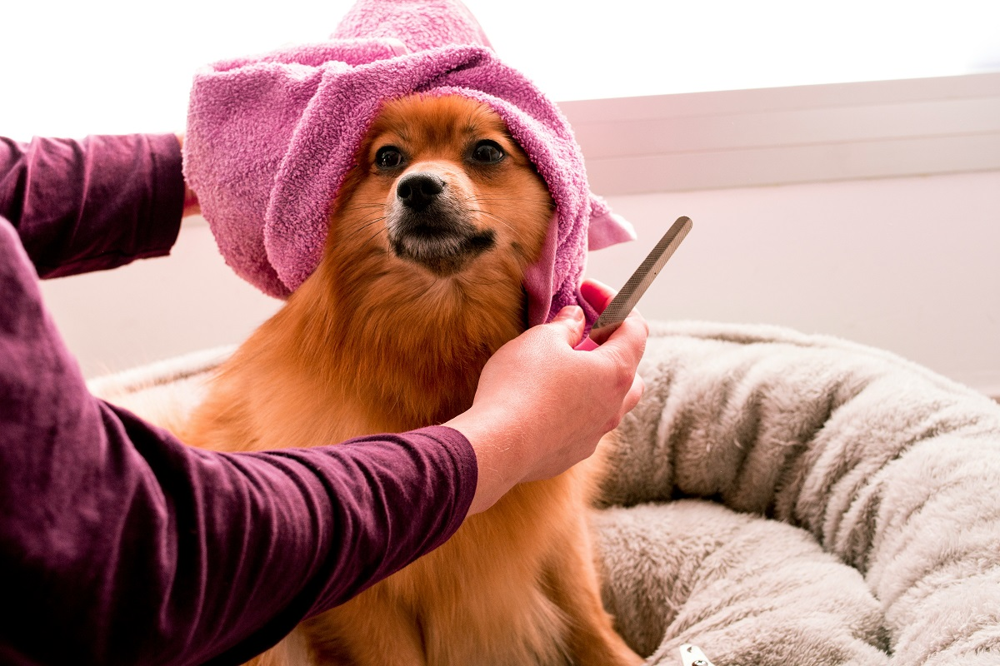
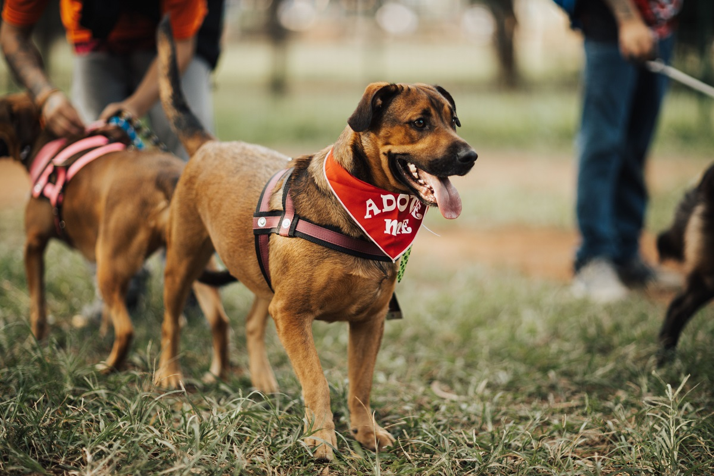
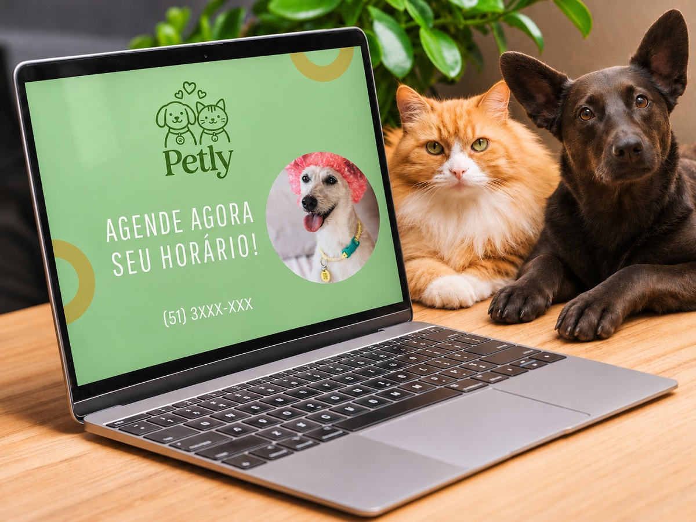
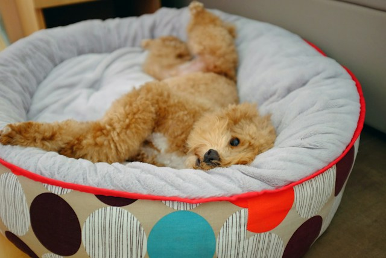
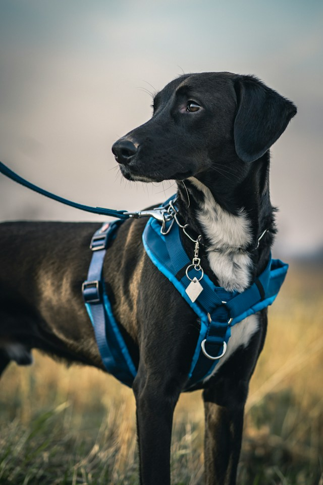
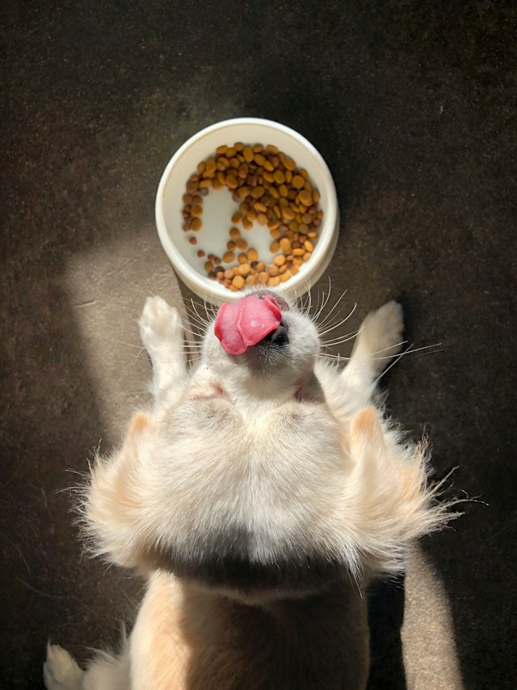
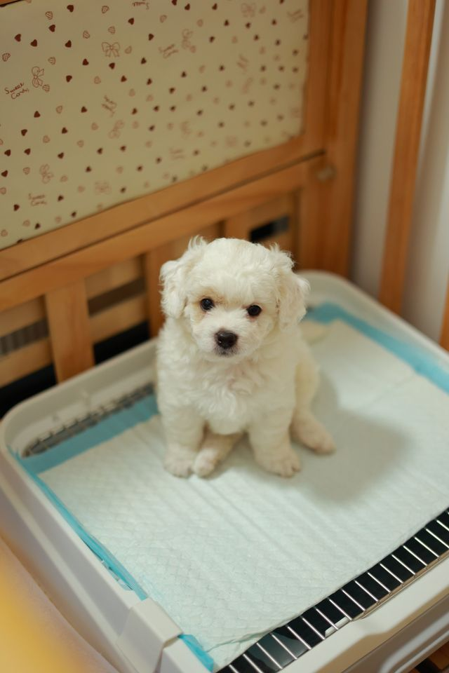
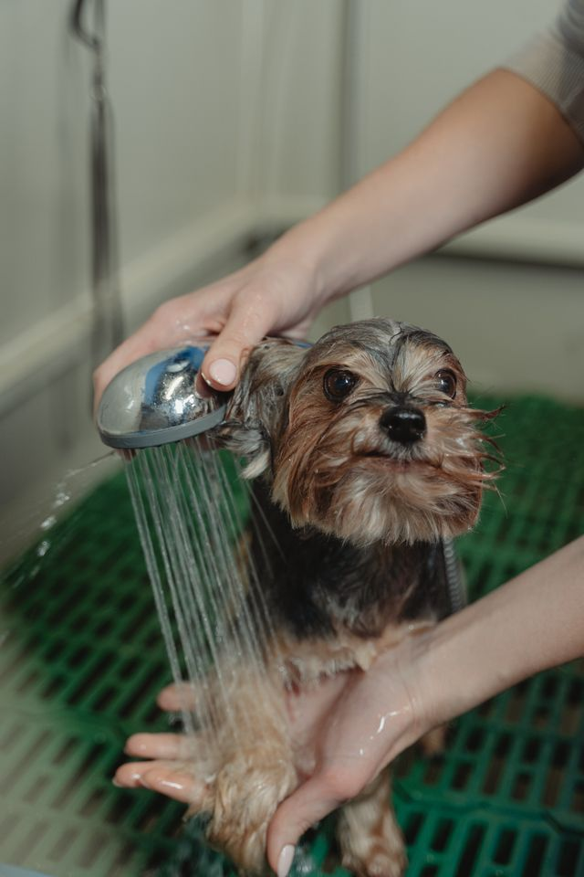
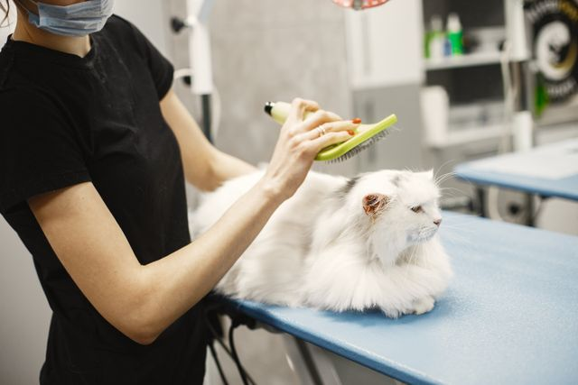
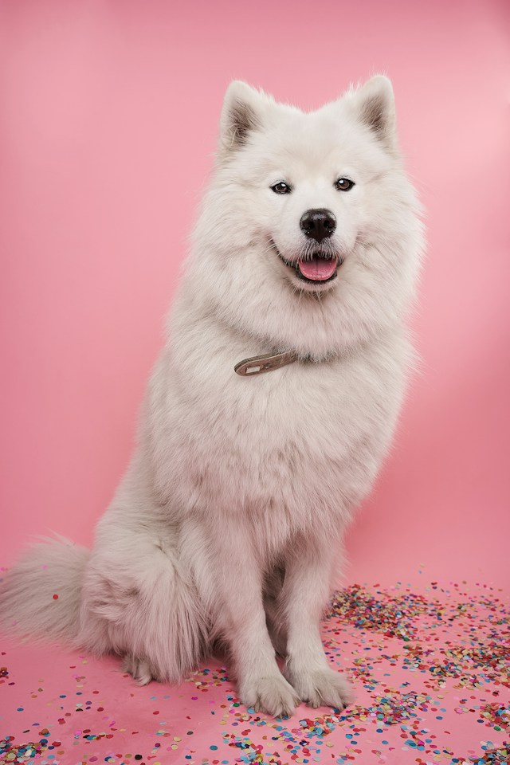

Banho e tosa com corte de unhas grátis!

*Conforme avaliação e segurança do pet.
 Petly: cuidado que conecta você ao seu pet.
Petly: cuidado que conecta você ao seu pet.
Porto Alegre, RS | Atendimento todos os dias, das 9h às 19h
Pra quem sabe que pet é família de verdade:
um cuidado que acolhe, produtos de primeira linha e um olhar atento pra cada necessidade do seu cão ou gato.



Produtos especiais selecionados para o cuidado, conforto e diversão dos seus pets. Conheça os destaques deste mês.

Cama confortável e aconchegante, ideal para os momentos de descanso.
R$ 189,90

Peitoral acolchoado e ajustável. Disponível nas cores azul e rosa. Tamanhos P, M e G.
R$ 119,90

Ração seca premium para cães adultos, embalagem de 2 kg.
R$ 124,90

Ração seca premium para gatos adultos castrados, embalagem de 1,5 kg.
R$ 119,90

Pacote com 30 unidades detapetes higiênicos, desenvolvidos para a rotina dos cães.
R$ 89,90
Areia higiênica premium com formação de torrões, embalagem de 4 kg.
R$ 89,90

Combinação de banho e tosa. A partir de R$ 120,00.

Escovação leve e corte de unhas para gatos. R$ 80,00.

Banho e hidratação da pelagem. A partir de R$ 110,00.
Produtos de qualidade, atendimento humanizado e respeito ao comportamento de cada animal. Nossa filosofia reconhece cães e gatos como membros da família.
Consulte as condições de atendimento, cuidados especiais e transporte próprio com tele-busca.